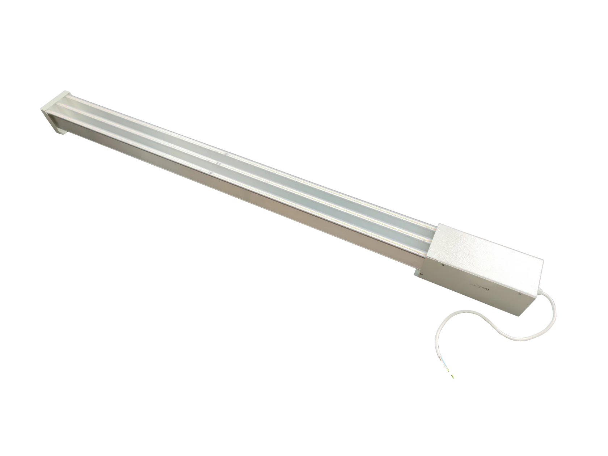

Новый запуск
Состав фермы, запуск и рамка бюджета.
- Новый объект или первая очередь
- Нужен расчёт и состав
- Переход в расчёт фермы
Расчёт, оборудование, запуск и сопровождение для клубничных ферм в контролируемой среде.
Три входа: запуск, рабочая ферма и конкретный узел.
Состав фермы, запуск и рамка бюджета.
Разбор узла, схемы и ближайших изменений.
Когда задача уже понятна и нужно быстро открыть свет, полив, стеллажи или посадочный материал.
Сначала логика проекта, потом закупка. Так проще запускать ферму и меньше риск ошибиться в связке узлов.
Смотрите готовые позиции, когда задача уже понятна и нужно быстро перейти к выбору.




От вводных до рабочей схемы без лишних кругов.
Этого достаточно, чтобы собрать следующий шаг без лишней переписки.
Контакт, этап и короткое описание. Дальше задача уходит в нужный маршрут.